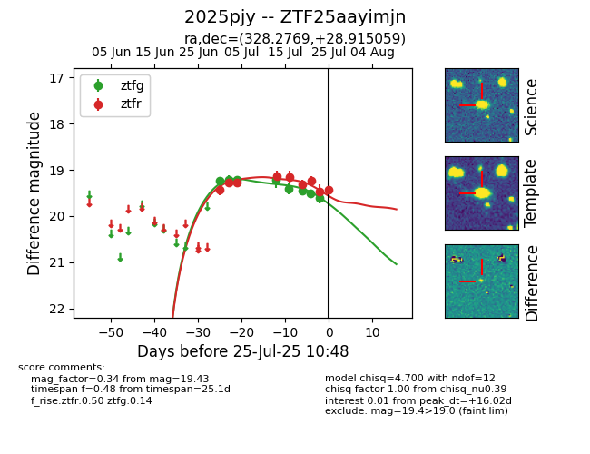

Target 2025pjy at 2025-07-25 10:48, see:
FINK: fink-portal.org/2025pjy
Lasair: lasair-ztf.lsst.ac.uk/objects/2025pjy
ALeRCE: alerce.online/object/2025pjy
TNS: wis-tns.org/object/2025pjy
YSE: ziggy.ucolick.org/yse/transient_detail/2025pjy
alt names
ZTF25aayimjn (ztf,fink)
2025pjy (tns,yse)
coordinates:
equatorial (ra, dec) = (328.2769,+28.91506)
galactic (l, b) = (82.2423,-19.53542)
photometry
last ztfg=19.60, ztfr=19.43
8 ztfg, 9 ztfr detections
